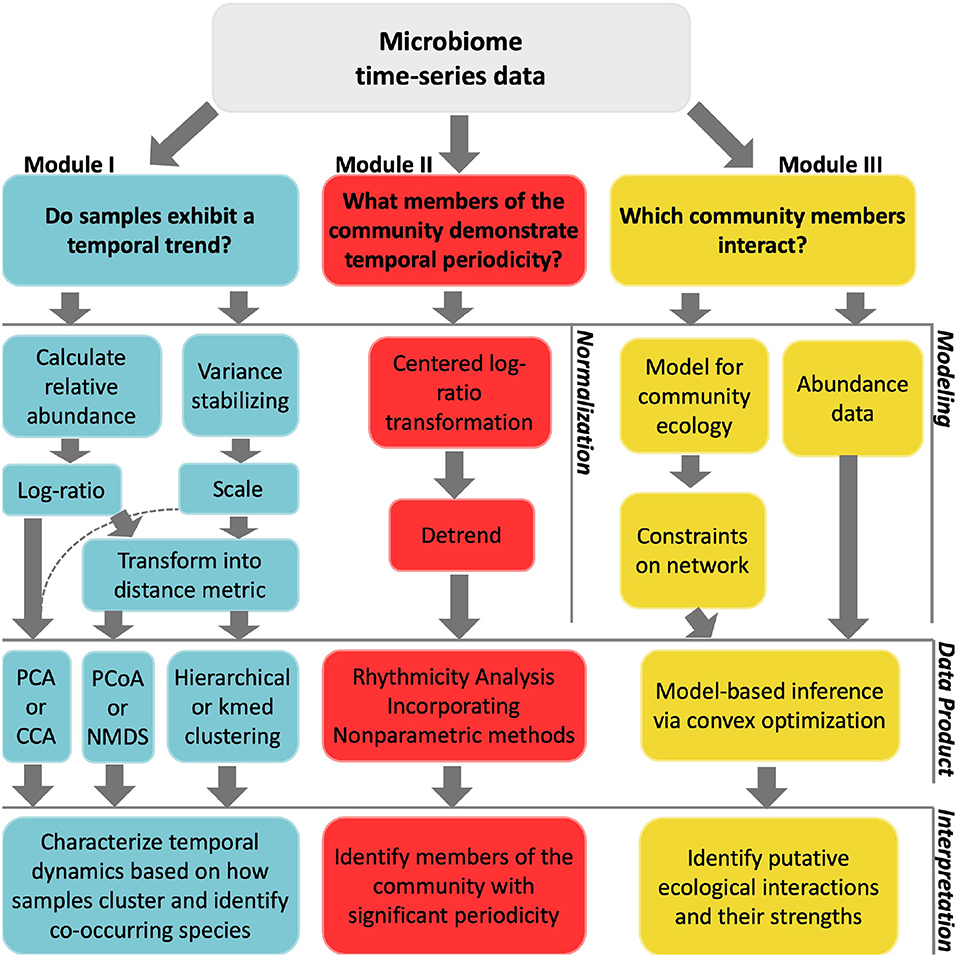

Data science
Despite their ecological importance, efforts to catalog protistan physiological abilities and trophic strategies lag behind those of their prokaryotic counterparts. The interpretation of large sequence datasets relies on the knowledge gleaned from culture-based transcriptome studies, new developments in genetic probing of microorganisms, and single-cell sequencing. It is imperative that we build reproducible pipelines and infrastructure to keep up with growing sequence information.
1 Computational biology

1.1 Tag-sequencing
To address questions related to microeukaryotic biodiversity, we use 18S rRNA gene tag-sequencing (also called metabarcoding). Below are resources for analyzing this type of data.
Our most recent tag-sequencing work flow was updated in 2024.
Check my github for in process work, where we are always working to update our code.
Also see the BVCN resources for amplicon sequencing
1.2 Time-series data
When we work with any metabarcoding data, it is important to acknowledge and analyze it as compositional data. As part of our R code clubs we always emphasize the inclusion of diagnostic steps to make sure our data is being analyzed appropriately.
A product from a series of discussions with colleagues is resource for how to analyze time-series data.. When paired with the publication it is a good reminder and starting point when analyzing this type of dataset.
Additional resources include the code and publication, called A Hard Day’s Night, which explores temporal niche partitioning among Station ALOHA microeukaryotic communities.

1.3 Metatranscriptomics
To interrogate in situ microeukaryotic metabolic activity, we can target the messengar RNA (mRNA) for sequencing through metatranscriptomics.
Our most recent introductory tutorial on metatranscriptomics, especially for eukaryotes, can be found here.
1.3.1 Computational tools
An active area of our research includes developing solutions to the computational challenges presented by eukaryotic genetics, a part of this involves creating tools to automate the assembly, annotation, and processing of meta’omic (metagenome/metatranscriptome) data (EUKulele, EUKHeist) and augment how sequence reference databases are queried (see Krinos et al. 2024).

1.3.2 Building reproducible pipeline for amplicon sequence analysis
Instructions for implementing a snakemake workflow to make tag-sequencing pipeline more robust HERE
Building/prepping a database for use in QIIME2
1.3.3 Metaeukomic
Members of the Hu lab are contributing to community-wide efforts to examine the range of variability across metatranscriptome bench and computational pipelines. This an intercalibration effort funded by OCB, Metaeukomic.
2 Database Darkly

A challenge we face with deep-sea biodiversity work is the lack of available genetic reference databases. Using results from a large tag-sequencing survey, a team of undergraduate researchers took a deep dive into mining biological and ecological information about deep-sea protistan species.
Visit the Database Darkly website to learn more about the microeukaryotes that live in the dark ocean.
 {.lightbox,fig-align=“center”, width=“450”}
{.lightbox,fig-align=“center”, width=“450”}
3 R tutorials & workshops
Generating figures from HTS tag-sequencing data - OTU or ASV table as input
Learning R with BVCN
Extracting microbial eukaryotic information from metagenomes
4 R packages & builds
4.1 Axial Seamount Wordle
Play our custom Axial Seamount-themed wordle
Part of our #protatax expedition.
4.2 Woods Hole color palette
Download color palettes inspired by Cape Cod and Woods Hole area. Includes docks, sunsets, WHOI logo, and RV Atlantis. github

4.3 ExeRcise
Generate a randomized custom workout. Inspired by High Intensity Interval training workouts, user defines warm up and workout interval length and total number of exercises. Additional functions to run workout with a timer in R and a tabata-style workout. github
4.4 Lab work
Built for personal use only. List of functions to streamline molecular bench work and common math required in preparing genetic material for sequencing. e.g., PCR master mix calculation, CV=CV, and RNA quantification preparation steps. github repo

the Knob in Woods Hole, MA